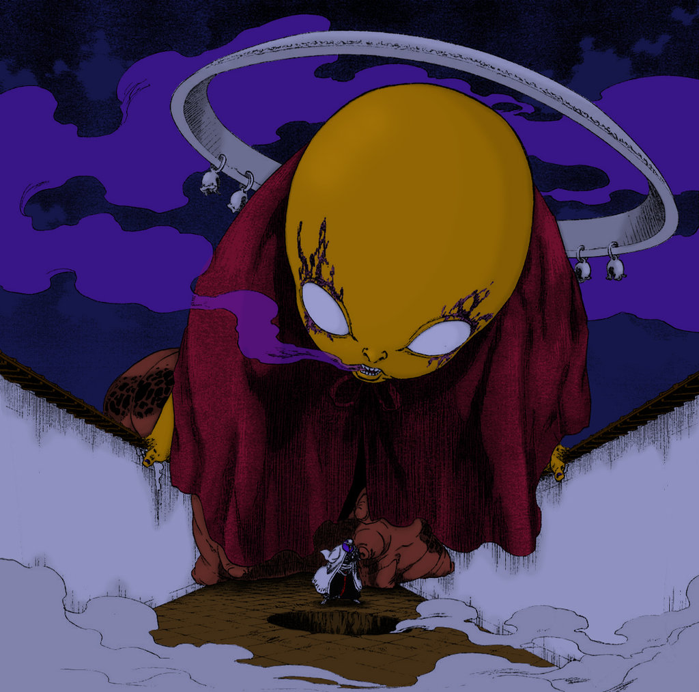

 Способности банкая: Создание выпускает ядовитые испарения крови Маюри, которые являются смертельными для любого, кто вдыхает их, кроме самого Маюри и Нему. Яд распространяется на очень большое пространство, и его действия практически невозможно избежать. Яд Конджики Ашисоги Джизо очень мощный; например, тело Заэля начало разрушаться сразу после воздействия яда. Против него имеется противоядие, которое Нему хранит за своим значком лейтенанта, а Маюри - в себе самом.Маюри может менять состав яда, чтобы невозможно было изобрести надежного противоядия, а также, чтобы невозможно было выработать против него иммунитет. Даже если противник не дышит, яд все равно проникнет в его тело. До сих пор единственным способом избежать воздействия яда является отражение его достаточным количеством реяцу. Любой, кто находится в непосредственной близости от человека, отражающего действие яда, также останется невредимым. Лезвия Конджики Ашисоги Джизо Выдвигаюшиеся лезвия: Конджики Ашисоги Джизо может создавать большое количество лезвий, которые появляются из его груди, позволяя ему проходить через противников и пронзать их. Использование этого одновременно с ядом делает Конджики Ашисоги Джизо особенно смертоносным для всех, кто не может держаться на безопасном расстоянии, что также трудно из-за его огромных размеров. В дополнение к созданию лезвий, он может пожирать убитых ими противников. Самоуничтожение Ашисоги Джизо Самоуничтожение: Маюри модифицировал Конджики Ашисоги Джизо так, что он самоуничтожается и возвращается в запечатанное состояние в случае, если пытается атаковать владельца. Модифицированный банкай: Конджики Ашисоги Джизо:Матаи Фокуин Шоутай Модифицированный банкай: Конджики Ашисоги Джизо: Матаи Фокуин Шоутай : При необходимости Маюри может использовать модифицированный банкай. В этом случае Ашисоги Джизо принимает форму огромного, толстого, темнокожего ребёнка, одетого в белую набедренную повязку с куском белой ткани, частично прикрывающим грудь. На уродливой голове существа два отростка с подвешенными на них коробками. Глаза полностью белые, без зрачков. На животе большой вертикальный разрез, по обеим сторонам которого написаны иероглифы. "Ребёнок" лежит на куче толстых шнуров, на которых заметны пупочные вены. Способности модифицированного банкая: С учётом информации, полученной от владельца во время боя, он может создавать новых Конджики Ашисоги Джизо с изменёнными характеристиками.